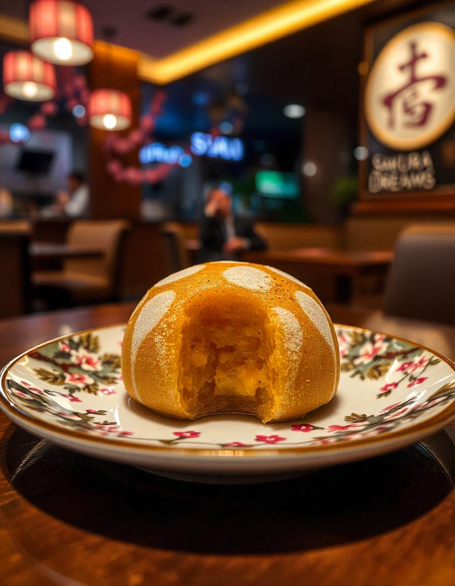
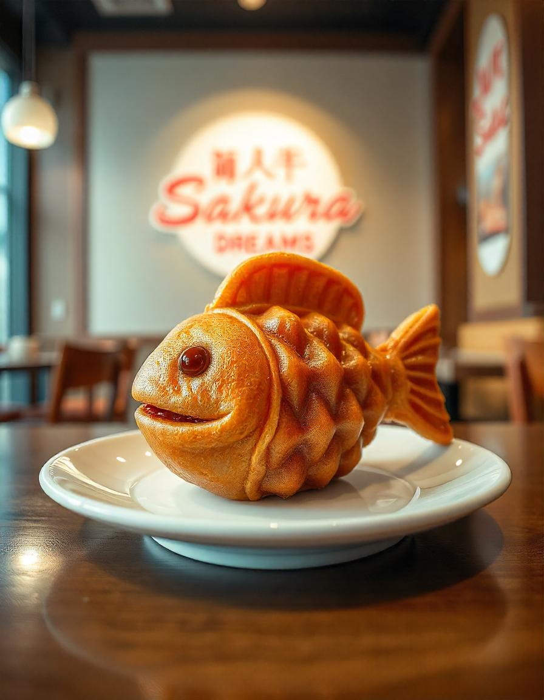

Recetas Dulces - Sakura Dreams
1. Dorayaki

Descripción: Esponjosas tortitas japonesas rellenas de pasta dulce de judías rojas.
- Ingredientes:
- 2 huevos grandes
- 100 g de azúcar granulada
- 2 cucharadas de miel
- 160 g de harina para todo uso
- 1 cucharadita de polvo para hornear
- 60ml de agua
- 200 g de pasta de judías rojas dulces (anko)
- Aceite neutro (para cocinar)
- Pasos:
- En un bol, mezcle los huevos, el azúcar y la miel hasta que quede suave.
- Tamice la harina y el polvo para hornear, luego mezcle hasta que estén combinados.
- Agregue agua y revuelva hasta que la masa esté suave y ligeramente líquida.
- Calienta una sartén antiadherente a fuego medio-bajo y engrasa ligeramente.
- Vierta pequeñas cantidades de masa (aproximadamente 3 cucharadas por panqueque) en el molde para formar círculos.
- Cocine hasta que se formen burbujas en la superficie (aproximadamente 2 minutos), luego voltee y cocine por otros 1-2 minutos.
- Deje que los panqueques se enfríen y luego coloque una cucharada de pasta de frijoles rojos entre dos panqueques.
2. Taiyaki

Descripción: Pasteles con forma de pez rellenos de pasta dulce de judías rojas o natillas.
- Ingredientes:
- 150 g de harina para todo uso
- 1 cucharadita de polvo para hornear
- 1 cucharada de azúcar
- 1 huevo grande
- 200ml de leche
- 1 cucharada de mantequilla derretida
- 200 g de pasta de judías rojas dulces (anko) o natillas
- Molde taiyaki (o molde para tortitas)
- Pasos:
- En un bol, mezcle la harina, el polvo para hornear y el azúcar.
- En otro bol, mezcle el huevo, la leche y la mantequilla derretida.
- Combine los ingredientes húmedos y secos para formar una masa suave.
- Calentar el molde taiyaki y engrasarlo ligeramente.
- Vierte una pequeña cantidad de masa en el molde y luego agrega una cucharada de relleno.
- Cubre el relleno con más masa y cierra el molde.
- Cocine durante 2-3 minutos por cada lado hasta que estén dorados.
- Retirar del molde y servir caliente.
3. Sakura Macarrons

Descripción: Macarons con sabor a flor de cerezo y ganache de chocolate blanco.
- Ingredientes:
- Conchas de macarrón:
- 100 g de harina de almendras
- 100 g de azúcar en polvo
- 80 g de claras de huevo (temperatura ambiente)
- 70 g de azúcar granulada
- colorante alimentario rosa
- 1 cucharadita de extracto de sakura (flor de cerezo)
- Ganache de chocolate blanco:
- 100 gramos de chocolate blanco
- 50 ml de nata espesa
- 1 cucharadita de extracto de sakura
- Pasos:
- Tamizar juntos la harina de almendras y el azúcar glass.
- En un recipiente aparte, bata las claras de huevo hasta que estén espumosas y luego agregue gradualmente la azúcar granulada. Batir hasta que se formen picos rígidos.
- Incorpora suavemente los ingredientes secos al merengue, agregando colorante rosa y extracto de sakura.
- Coloque pequeños círculos en una bandeja para hornear forrada con papel pergamino.
- Deje reposar las cáscaras durante 30 minutos para que se forme una piel.
- Hornee a 150°C (300°F) durante 15-18 minutos. Dejar enfriar.
- Para la ganache, calentar la nata y verter sobre el chocolate blanco picado. Revuelva hasta que quede suave y luego agregue el extracto de sakura. Deja que espese.
- Coloque ganache sobre una base de macarrón y emparéjela con otra.
4. Tiramisu Matcha

Descripción: Un tiramisú de inspiración japonesa con capas de matcha y mascarpone.
- Ingredientes:
- 200 g de bizcochos (savoiardi)
- 1 taza de té matcha fuerte (enfriado)
- 250 g de queso mascarpone
- 100 g de azúcar en polvo
- 1 taza de crema espesa
- 2 cucharadas de matcha en polvo (más un extra para espolvorear)
- Pasos:
- Sumerja los bizcochos brevemente en té matcha y colóquelos en capas en un plato.
- En un bol, bata el mascarpone y el azúcar en polvo hasta que quede suave.
- En otro tazón, bata la crema espesa hasta que se formen picos rígidos y luego incorpórela a la mezcla de mascarpone.
- Agrega el polvo de matcha a la mezcla de crema y mezcla bien.
- Unte la mitad de la crema de matcha sobre los bizcochos.
- Agregue otra capa de bizcochos bañados en matcha y luego cubra con la crema restante.
- Espolvorea la parte superior con polvo de matcha.
- Refrigere durante al menos 4 horas (o toda la noche) antes de servir.
5. Anmitsu
Descripción: Un refrescante postre japonés con gelatina de agar, pasta de frijoles rojos, fruta y almíbar de azúcar negra.
- Jalea de agar:
- 4 g de agar en polvo (o 1 tira de agar)
- 2 tazas de agua
- 2 cucharadas de azúcar
- Ingredientes:
- ½ taza de pasta de frijoles rojos dulces (anko)
- 1 taza de frutas frescas variadas (por ejemplo, fresas, kiwi, naranjas o melón)
- 4 trozos pequeños de mochi
- 2 cucharadas de almíbar de azúcar negra (kuromitsu)
- Opcional: helado de vainilla o nata montada
- Pasos:
- En una cacerola, combine el agar en polvo, el agua y el azúcar. Llevar a ebullición mientras revuelve hasta que el agar se disuelva.
- Vierte la mezcla en un plato poco profundo y déjala enfriar a temperatura ambiente. Una vez cuajado, refrigere durante 1-2 horas hasta que esté firme.
- Corta la gelatina en cubos pequeños.
- Corta la fruta fresca en trozos pequeños.
- Si usa mochi comprado en la tienda, córtelo en trozos pequeños.
- En un recipiente para servir, coloque un puñado de cubitos de gelatina de agar.
- Agrega una cucharada de pasta dulce de frijoles rojos (anko) a un lado del tazón.
- Coloca la fruta fresca y los trozos de mochi alrededor de la gelatina.
- Rocíe jarabe de azúcar negro (kuromitsu) por encima.
- Para darle un toque extra, agregue una bola de helado de vainilla o una cucharada de crema batida.
Volver a RECETAS